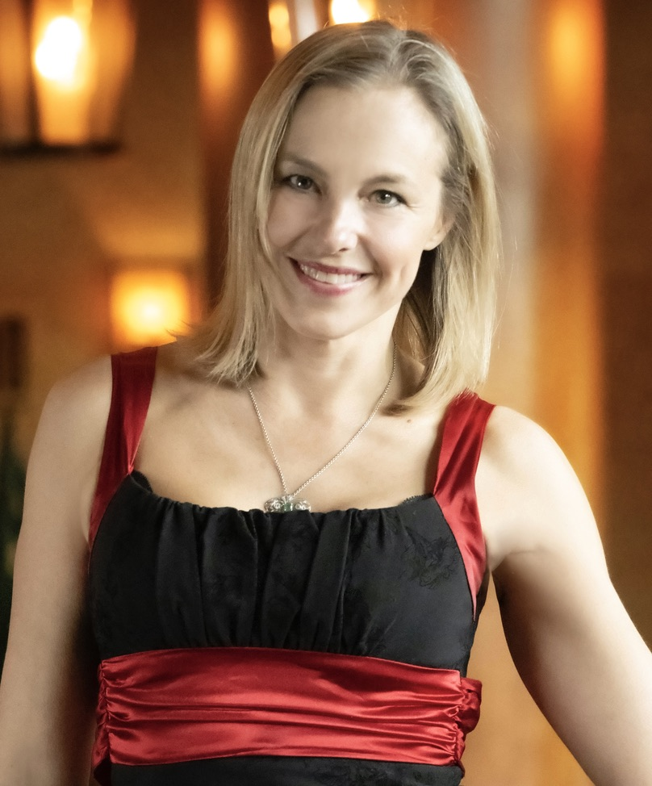

Speaker One-Sheet
Relationship expert. Tantrika. Founder of Maura Grace Wisdom and Relationship Magick™.
Maura Grace is the founder of Maura Leigh Grace, LLC, teaching couples, founders, and high performers on relationship, polarity, and embodiment. A trained therapist working as a mentor, she takes five private clients a year at $100,000 and teaches four proprietary courses. She runs her entire company on an agentic AI system she built and directs herself, and is training a model on her own 460,000-word teaching corpus.
Maura Grace is a relationship expert and tantrika who holds a Master’s degree in Transpersonal Counseling Psychology from Naropa University. She has spent over a decade in post-master’s training in couples therapy, trauma therapy, somatic therapy, and masculine/feminine studies.
Why modern men lost the right kind of confidence, and how they get it back.
For men’s rooms, men’s podcasts, and leadership stages. Men were taught to be the gas pedal in relationships. The real masculine role is the brakes: safety, desire, and decisive direction, held with an open heart under pressure.
Awakening the goddess within.
For women’s rooms, embodiment stages, and sexuality podcasts. The cervix is a portal to pleasure, intuition, and feminine power, and reclaiming pleasure as a legitimate practice is the doorway back to it.
Consent, courtship, and the repair of the masculine-feminine rift.
For couples rooms, general audiences, and flagship stages. Modern relationship collapse is a civilizational problem, not a personal failing, and courtship is the repair.